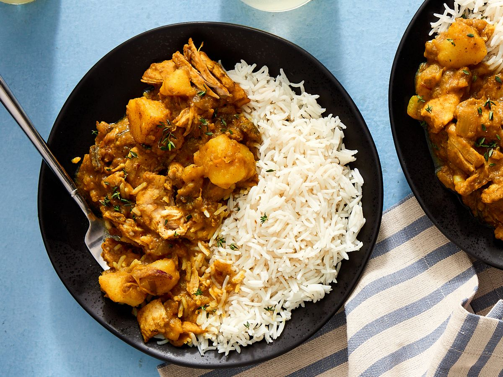

How to make Curry

Description
This Jamaican Curry Chicken recipe is a beloved Caribbean meal; full of rich, warm aromatic spices, herbs, veggies, potatoes, and tender chicken pieces.
This easy one pot meal is simmered and cooked down in a delicious savoury curry sauce.
Ingredients
- 2½ lbs Chicken
- 2 tbsp Curry powder
- 2 tbsp All-purpose or Chicken
- 1 ½ tsp Salt
- 5 Pimento berries (allspice)
- 3 Cloves garlic
- 1 Medium onion
- 3 Sprig of fresh thyme
- 2 Medium carrots
- 1 Small potato
- 1 ½ tsp Freshly grated ginger
- 1 Small scotch bonnet pepper
- 3 tbsp Cooking oil
- Boiling water
- lime/lemon
- 1 tsp Vinegar
Instructions
- Remove the skin (if there is any) from the chicken and cut it into small pieces.
Wash the chicken in water with the juice from the lime/lemon and the vinegar.
Drain away all the excess water from the chicken. Dry with kitchen towel if necessary.
- In a kitchen bowl, add the chicken, onion, garlic, scotch bonnet pepper, pimento berries, ginger, salt, all-purpose seasoning,
the curry powder and mix everything together and leave to marinate for 30 minutes or more.
- In a pot add the cooking oil and put to hot on medium heat.
- Add the seasoned chicken to the oil and stir well.
Let the chicken cook until lightly brown on all sides. Don't let the pot burn, add a tip of water if necessary.
-
Stir in the carrot, potato and thyme. Add water enough to cover the chicken in the pot. Cover and leave to cook for 25-30 minutes,
until the chicken is cooked and the water is reduced to a curry gravy.